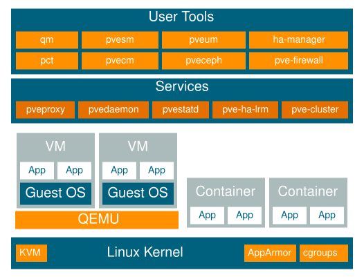

1. 소개#
Proxmox VE는 가상 머신과 컨테이너를 실행하기 위한 플랫폼입니다. Debian Linux를 기반으로 하며 완전한 오픈 소스입니다. 유연성을 극대화하기 위해 커널 기반 가상 머신(KVM)과 컨테이너 기반 가상화(LXC)라는 두 가지 가상화 기술을 구현했습니다.
주요 설계 목표 중 하나는 관리를 최대한 쉽게 만드는 것이었습니다. 단일 노드에서 Proxmox VE를 사용하거나 여러 노드로 구성된 클러스터를 구성할 수 있습니다. 모든 관리 작업은 웹 기반 관리 인터페이스를 사용하여 수행할 수 있으며, 초보자도 몇 분 안에 Proxmox VE를 설정하고 설치할 수 있습니다.

1.1. 중앙 관리#
많은 사람들이 단일 노드로 시작하지만, Proxmox VE는 대규모 클러스터 노드로 확장할 수 있습니다. 클러스터 구성 요소는 통합되어 있으며 기본 설치와 함께 제공됩니다.
고유한 멀티 마스터 디자인
통합 웹 기반 관리 인터페이스를 통해 모든 KVM 게스트와 Linux 컨테이너, 심지어 클러스터 전체 개요를 제공합니다. 따라서 GUI에서 VM과 컨테이너, 스토리지 또는 클러스터를 쉽게 관리할 수 있습니다. 복잡하고 값비싼 별도의 관리 서버를 설치할 필요가 없습니다.
Proxmox 클러스터 파일 시스템(pmxcfs)
Proxmox VE는 구성 파일을 저장하기 위해 데이터베이스 기반 파일 시스템인 고유한 Proxmox 클러스터 파일 시스템(pmxcfs)을 사용합니다. 이를 통해 수천 개의 가상 머신 구성을 저장할 수 있습니다. corosync를 사용하면 이러한 파일이 모든 클러스터 노드에서 실시간으로 복제됩니다. 파일시스템은 모든 데이터를 디스크의 영구 데이터베이스에 저장하지만, 데이터의 복사본은 최대 30MB 크기의 RAM에 상주합니다. 이는 수천 개의 VM에도 충분한 용량입니다.
Proxmox VE는 이 고유한 클러스터 파일 시스템을 사용하는 유일한 가상화 플랫폼입니다.
웹 기반 관리 인터페이스
Proxmox VE는 사용이 간편합니다. 관리 작업은 포함된 웹 기반 관리 인터페이스를 통해 수행할 수 있으므로 별도의 관리 도구나 대용량 데이터베이스를 갖춘 추가 관리 노드를 설치할 필요가 없습니다. 멀티마스터 도구를 사용하면 클러스터의 모든 노드에서 전체 클러스터를 관리할 수 있습니다. JavaScript Framework(ExtJS)를 기반으로 하는 중앙 웹 기반 관리를 통해 GUI에서 모든 기능을 제어하고 각 단일 노드의 이력 및 시스템 로그를 살펴볼 수 있습니다. 여기에는 백업, 복원 작업, 라이브 마이그레이션 또는 HA 트리거 활동 실행이 포함됩니다.
명령줄
Unix 셸 또는 Windows Powershell에 익숙한 일부 사용자를 위해, 버트온은 가상 환경의 모든 구성 요소를 관리할 수 있는 명령줄 인터페이스를 제공합니다. 이 명령줄 인터페이스에는 지능형 탭 완성 기능과 UNIX 매뉴얼 페이지 형식의 전체 문서가 있습니다.
REST API
Proxmox VE는 RESTful API를 사용합니다. 기본 데이터 형식으로 JSON을 선택하며 전체 API는 JSON 스키마를 사용하여 공식적으로 정의됩니다. 이를 통해 사용자 지정 호스팅 환경과 같은 타사 관리 도구에 빠르고 쉽게 통합할 수 있습니다.
역할 기반 관리
역할 기반 사용자 및 권한 관리를 사용하여 모든 객체(예: VM, 스토리지, 노드 등)에 대한 세분화된 액세스를 정의할 수 있습니다. 이를 통해 권한을 정의하고 개체에 대한 액세스를 제어할 수 있습니다. 이 개념을 접근 제어 목록(Access Control Lists, ACL)이라고도 합니다. 각 권한은 특정 경로에 대한 주체(사용자 또는 그룹)와 역할(권한 집합)을 지정합니다.
인증 영역
Proxmox VE는 Microsoft Active Directory, LDAP, Linux PAM 표준 인증 또는 기본 제공 Proxmox VE 인증 서버와 같은 여러 인증 소스를 지원합니다.
1.2. 유연한 스토리지#
Proxmox VE 스토리지 모델은 매우 유연합니다. 가상 머신 이미지는 하나 또는 여러 개의 로컬 스토리지에 저장할 수 있으며, NFS나 SAN과 같은 공유 스토리지에도 저장할 수 있습니다. 제한이 없어 원하는 만큼 구성이 가능하며, Debian Linux에서 사용 가능한 모든 스토리지 기술을 활용할 수 있습니다.
공유 스토리지에 VM을 저장하는 것의 가장 큰 장점은 클러스터의 모든 노드가 VM 디스크 이미지에 직접 액세스할 수 있으므로 다운타임 없이 실행 중인 머신을 라이브 마이그레이션할 수 있다는 점입니다.
현재 지원되는 네트워크 스토리지 유형은 다음과 같습니다:
LVM 그룹(iSCSI 대상을 사용한 네트워크 백업)
iSCSI target
공유 NFS
공유 CIFS
Cepf RBD
iSCSI LUN 직접 사용
GlusterFS
지원되는 로컬 스토리지 유형은 다음과 같습니다:
LVM 그룹(블록 디바이스, FC, DRBD 등과 같은 로컬 백업 장치)
디렉토리(기존 파일시스템의 스토리지)
ZFS
1.3. 통합 백업 및 복원#
통합 백업 도구(vzdump)는 실행 중인 컨테이너 및 KVM 게스트의 일관된 스냅샷을 생성합니다. 기본적으로 VM/CT 구성 파일이 포함된 VM 또는 CT 데이터의 아카이브를 생성합니다.
KVM 라이브 백업은 NFS, CIFS, iSCSI LUN, Ceph RBD의 VM 이미지를 포함한 모든 스토리지 유형에 대해 작동합니다. 새로운 백업 형식은 VM 백업을 빠르고 효과적으로 저장하는 데 최적화되어 있습니다(희소 파일, 순서가 맞지 않는 데이터, 최소화된 I/O).
1.4. 고가용성 클러스터#
멀티 노드 Proxmox VE HA 클러스터를 사용하면 고가용성 가상 서버를 정의할 수 있습니다. Proxmox VE HA 클러스터는 검증된 Linux HA 기술을 기반으로 하여 안정적이고 신뢰할 수 있는 HA 서비스를 제공합니다.
1.5. 유연한 네트워킹#
Proxmox VE는 브릿지 네트워킹 모델을 사용합니다. 각 게스트의 가상 네트워크 케이블이 모두 동일한 스위치에 연결되어 있는 것처럼 모든 VM이 하나의 브릿지를 공유할 수 있습니다. VM을 외부에 연결하기 위해 브릿지는 물리 네트워크 카드에 연결되고 TCP/IP 구성이 할당됩니다.
유연성을 더 높이기 위해 VLAN(IEEE 802.1q) 및 네트워크 본딩/통합이 가능합니다. 이러한 방식으로 Linux 네트워크 스택의 모든 기능을 활용하여 Proxmox VE 호스트를 위한 복잡하고 유연한 가상 네트워크를 구축할 수 있습니다.
1.6. 통합 방화벽#
통합 방화벽을 사용하면 모든 VM 또는 컨테이너 인터페이스에서 네트워크 패킷을 필터링할 수 있습니다. 일반적인 방화벽 규칙 집합을 “보안 그룹”으로 그룹화할 수 있습니다.
1.7. 하이퍼 컨버지드 인프라#
Proxmox VE는 컴퓨팅, 스토리지 및 네트워킹 리소스를 긴밀하게 통합하고, 고가용성 클러스터, 백업/복구 및 재해 복구를 관리하는 가상화 플랫폼입니다. 모든 구성 요소는 소프트웨어로 정의되며 서로 호환됩니다.
따라서 중앙 집중식 웹 관리 인터페이스를 통해 단일 시스템처럼 관리할 수 있습니다. 이러한 기능 덕분에 Proxmox VE는 오픈 소스 하이퍼 컨버지드 인프라를 배포하고 관리하는 데 이상적인 선택입니다.
1.7.1. Proxmox VE를 통한 HCI의 이점#
하이퍼 컨버지드 인프라(HCI)는 높은 인프라 요구사항에 비해 관리 예산이 제한적인 환경에서 특히 유용합니다. 또한 원격 사무실이나 지사 환경과 같은 분산 설치 환경이나 가상 사설 및 공용 클라우드 구축에 매우 적합합니다.
HCI는 다음과 같은 이점을 제공합니다:
확장성: 컴퓨팅, 네트워크 및 스토리지 장치의 원활한 확장(즉, 서버와 스토리지를 서로 독립적으로 신속하게 확장할 수 있음)
데이터 보호 및 효율성: 백업 및 재해 복구와 같은 서비스 통합
단순성: 쉬운 구성 및 중앙 집중식 관리
1.7.2 하이퍼 컨버지드 인프라: 스토리지#
Proxmox VE는 하이퍼 컨버지드 스토리지 인프라 배포를 위한 긴밀하게 통합된 지원을 제공합니다. 예를 들어 웹 인터페이스만 사용하여 다음 두 가지 스토리지 기술을 배포하고 관리할 수 있습니다:
Ceph: 자가 복구 및 자가 관리가 가능한 안정적이고 확장성이 뛰어난 공유 스토리지 시스템입니다.
ZFS: 파일 시스템과 논리 볼륨 관리자가 결합된 시스템으로, 데이터 손상에 대한 광범위한 보호 기능, 다양한 RAID 모드, 빠르고 경제적인 스냅샷 등의 기능을 제공합니다. Proxmox VE 노드에서 ZFS의 강력한 기능을 활용하는 방법을 알아보세요.
위의 기능 외에도 Proxmox VE는 다양한 추가 스토리지 기술을 통합할 수 있도록 지원합니다. 이에 대한 자세한 내용은 스토리지 관리자 챕터에서 확인할 수 있습니다.